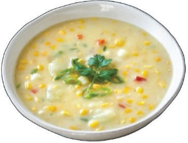
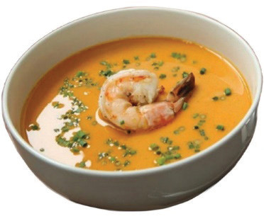

Chowders: These are thick soups made with large pieces (chunky) of food materials, typically made by combining various ingredients such as fish, seafood, poultry, or vegetables with a creamy base. They are typically seasoned with herbs, spices, and sometimes bacon or salt pork to enhance their flavour. Chowders are not strained. Examples of chowders are seafood chowder soup and maize chowder soup. Figure 5.21 presents maize chowder soup, also known as corn chowder.

Bisque: It is a shellfish-based soup with a variety of flavouring ingredients added. Traditionally, bisque is made with lobster, crab, shrimp, or crawfish, but there are also variations using vegetables, mushrooms, or other seafood. Bisque soup is tasty but expensive. The soup may be garnished with dice of the seafood used. It is thickened with cooked rice and finished with cream. Examples of bisque soups are lobster and prawn bisque. Figure 5.22 shows prawn bisque soup.
